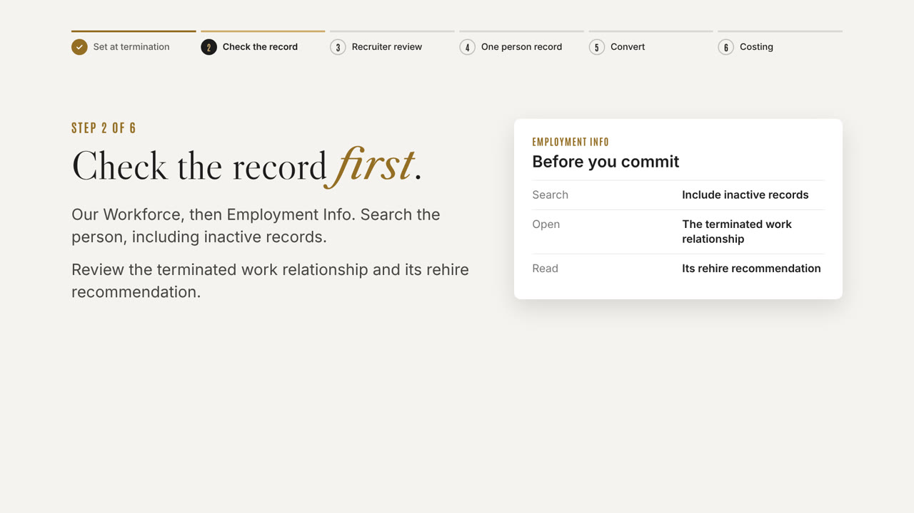
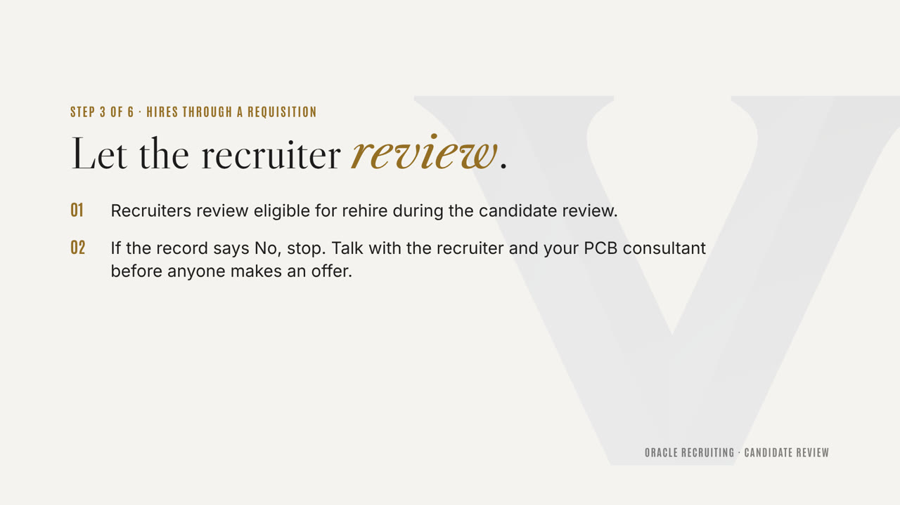

V.02 draftBuilt from Oracle documentation and official sources. Not yet reviewed by a Vanderbilt SME; confirm the open items before release.
Screen checkConfirm in Vanderbilt's Oracle or UKG during a recorded demo: Whether Vanderbilt's Terminate Employment page uses Oracle's Recommended for Rehire field as delivered (Yes, No, Not Specified); Whether the option to include terminated work relationships shows on Vanderbilt's Employment Info search; Where Oracle shows a possible matching person during a rehire, and the labels on that screen; Who can approve rehiring someone marked No, and how Not specified is treated; Where recruiters see the rehire recommendation in Oracle Recruiting; Whether rehires through a requisition need any extra step before conversion.
1 · Intro
When to use it.
Watch first, then read the details below. Narrated, with the steps captioned on screen. A training simulation with fictional names, built from standard Oracle screens; Vanderbilt's screens may differ slightly.
A rehire is someone who worked here before and is coming back. Oracle already has their person record, so the hire adds a new work relationship to that record instead of creating a new person.
Whether they can come back is decided by the rehire recommendation recorded when they were terminated. Recruiters review it, and you should know what it says before you move forward.
Use this whenA candidate you want to hire used to work at Vanderbilt, or you are terminating someone and need to set the rehire field.
2 · Walk through
How rehires work.
Check off each item as you read.
Rehire recommendation at a glance
Value on termination
What it means for a rehire
Yes
Eligible; recruiter proceeds through the normal process.
No
Not eligible without review; talk to the recruiter and your PCB consultant.
Not specified
Treat as a flag; ask before moving forward.
Watch-outs
The rehire field is only as good as the termination entry. Set it carefully when you terminate someone; recruiters rely on it later.
Search inactive records before hiring a familiar name. A duplicate person record is hard to undo.
Open item: confirm with your engagement consultant (EC) who can approve rehiring someone marked No, and how Not specified is handled.
Official documentation
Vendor documentation describes the standard process. Vanderbilt's setup, codes, and rules in this course take priority.
Use when: A candidate you want to hire used to work at Vanderbilt, or you are terminating someone and need to set the rehire field. · System: Oracle Recruiting
Know that the rehire field is set at termination.
Misconduct: No or Not specified, per your PCB consultant.
Check the former employee's record before you commit.
Let the recruiter review eligible for rehire.
Never create a second person record.
Convert the pending worker as you would any hire.
Review costing on the new assignment.
Rehire recommendation at a glance
Value on termination
What it means for a rehire
Yes
Eligible; recruiter proceeds through the normal process.
No
Not eligible without review; talk to the recruiter and your PCB consultant.
Not specified
Treat as a flag; ask before moving forward.
Watch-outs
The rehire field is only as good as the termination entry. Set it carefully when you terminate someone; recruiters rely on it later.
Search inactive records before hiring a familiar name. A duplicate person record is hard to undo.
Open item: confirm with your engagement consultant (EC) who can approve rehiring someone marked No, and how Not specified is handled.
V.02 draft, updated Nov 18, 2026. Owner: HRIS. Sources: Oracle: Rehire a Worker; Oracle: Attributes for Worker Work Relationship; Oracle: How can I access inactive assignments?; Oracle: Redwood Terminate Employment page.Questions: pcb@vanderbilt.edu
HCM Academy detailed job aid · Hiring
Rehires, step by step
Step by step with screenshots. Screens from the HCM Academy training simulation of Oracle HCM. Names are fictional; check labels against Vanderbilt's Oracle.
01Know that the rehire field is set at termination.
When an employee is terminated, the termination records whether the person is recommended for rehire. In Oracle the field is Recommended for Rehire: Yes, No, or Not Specified. Oracle can tie the allowed value to the termination reason and records who made the recommendation and why.
02Check the former employee's record before you commit.
Go to Our Workforce > Employment Info and search the person with the option to include terminated work relationships. Review the terminated work relationship and its rehire recommendation.

03Let the recruiter review eligible for rehire.
For hires through a requisition, recruiters review eligible for rehire during the candidate review. If the record says No, stop and talk with the recruiter and your PCB consultant before anyone makes an offer.

04Never create a second person record.
Oracle matches the new hire to existing person records (including previous employees) by name and national identifier. Pick the existing record. A duplicate splits the person's history, pay, and tax records.
05Convert the pending worker as you would any hire.
After the background check clears and PEBC emails clear to start, convert the pending worker. Check that the new assignment, position, location, and pay reflect the new job, not the old one.
06Review costing on the new assignment.
Old costing does not carry the right account for a new job automatically. Check Costing for Persons after the hire. Blank costing means the work unit default is used, which is not an error.
V.02 draft, updated Nov 18, 2026.Questions: pcb@vanderbilt.edu
Course record
Owner and changes.
Owner
HRISRecruiting and hiring, assignment changes, offboarding, leave, records and reporting, and the HCM foundations.
Version
V.02 draftUpdated Nov 18, 2026
Review
Built from Oracle documentation and official sources. Not yet reviewed by a Vanderbilt SME; confirm the open items before release.
What changed
Nov 18, 2026Video and job aid rebuilt on the Oracle screens, from Oracle's documentation; steps outside Oracle stay as cards. Field names in steps 1 and 2 now follow Oracle's documentation: Recommended for Rehire (Yes, No, Not Specified), and the search option to include terminated work relationships.
Nov 17, 2026Added a narrated video and a detailed job aid with a picture for each step.
Nov 13, 2026Owner is now HRIS. It was shown as Recruiting and Hiring.